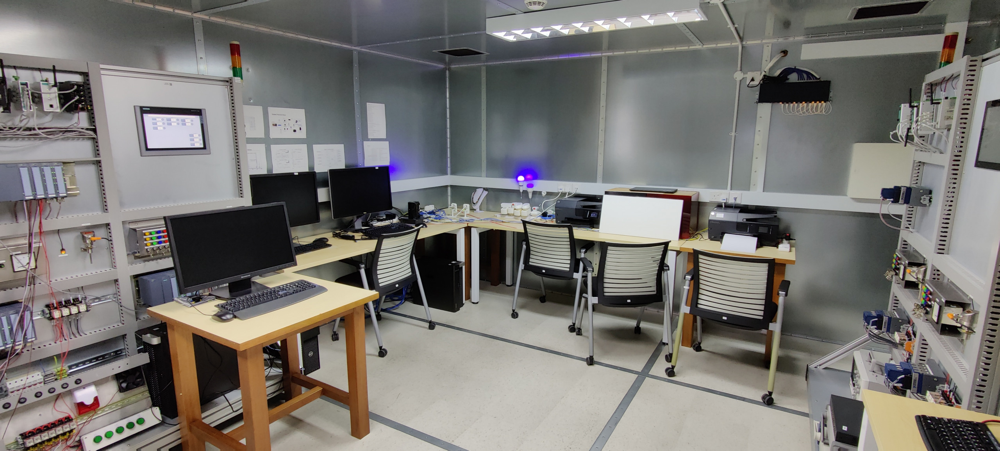
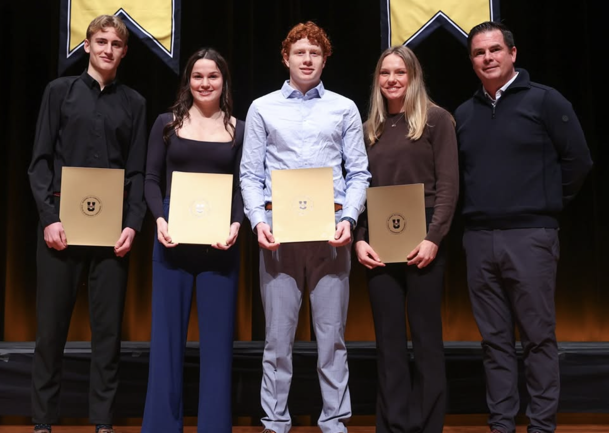

Education and Experience

Education
Dalhousie University
Bachelor of Computer Science
Expected Graduation: April 2028
Acadia University
Bachelor of Computer Science.
GPA: 4.28/4.33
2x Dean's List Scholar, 2x USPORTS Academic All-Canadian
Transferred to Dalhousie University
Experience
Long Lake Adventure Company
Assistant Manager
Managed daily operations including sales, inventory, and customer bookings, while leading staff, fostering team development, and resolving customer and operational challenges to maintain smooth business performance.
Acadia University
Undergraduate Research Assistant (Volunteer)
Assisted with research on low-power wireless sensor networks by collecting greenhouse data, configuring and simulating IoT systems using Contiki OS, and gaining hands-on experience with embedded C and wireless communication protocols.
Acadia University
Tutor (Part-time)
Part-time tutor for fellow students in mathematics, statistics and computer science courses, helping obtain a deep understanding of course material and strengthening study skills
